LMC Ward 10, Survey App
A field-worker mobile app for Lalitpur Metropolitan City Ward 10, designed to replace paper-based household and individual census surveys with a single, location-assigned digital workflow.

Overview
Lalitpur Metropolitan City Ward 10 covers Jwagal and Kopundole, roughly 1,729 households and 6,554 residents. The ward office needed a digital tool for field workers to capture standardised household and individual demographic data, location-by-location, across the entire ward. I designed the mobile app the workers used in the field.
At a glance
- Role: UX/UI designer
- Client: LMC Ward 10 office (our office was located within the ward)
- Surface: Mobile app + design system
- Languages: Nepali (Devanagari) + English bilingual labels
- Status: Shipped and used in the field; the ward's web presence has since been redesigned at ward10.lmc.gov.np
The problem
Ward-level census and household surveys in Nepal were, and largely still are , paper-driven. A field worker walks a route with a clipboard, fills out long Nepali-language forms by hand, then returns to the ward office where staff re-enter everything into a spreadsheet. The result is predictable: lost forms, illegible handwriting, double entry, no real-time visibility of who'd been surveyed where, and an aggregate dataset that took weeks to compile and could never quite be trusted.
Ward 10 wanted to skip that whole pipeline. Capture the same data digitally at the doorstep, tag it to a household with GPS, sync it centrally, and use the same interface every survey worker already understood from paper, in Nepali, with the same field names and the same flow.
Designing inside three hard constraints
This wasn't a greenfield product where I could invent terminology and flows. Three constraints shaped every design decision.
Match the paper
Workers had been filling the same form for years. The field labels, ordering, and Nepali wording had to match exactly, otherwise we'd lose the very muscle memory that made the app fast to use.
Bilingual, Nepali-first
Devanagari was the primary language; English labels sat in support where helpful. Every label, validation message, and empty state was bilingual or Nepali-only, not English with a Nepali sticker on top.
One thumb, in the field
Workers held the phone at a doorstep, often with one hand. Tap targets stayed large, primary action sat at the thumb-reachable bottom, and review/preview screens let workers double-check before save.
Two forms, one household
Every household visit produced two linked records: a family-level form (पारिबारिक प्रश्न) capturing dwelling and household-wide data, and one or more individual-level forms (व्यक्तिगत खण्ड), one per member. Splitting the data model into two forms, with a clear card-based picker on the home screen , let workers move between them without losing context, and matched the paper survey's existing two-section structure exactly.
Family form: dwelling, ownership, livelihood
The family form captures who lives at an address and how. Across two pages, workers log form number, respondent name, head of household, house and street numbers, toll (locality), phone, migration history (if the family moved from another district), primary and secondary occupations, and dwelling-level details like access road type (motor road / bike-only / walk-only) and ancestral-home status. Each section sits in its own card, so a worker can scroll, edit, and review without losing place.
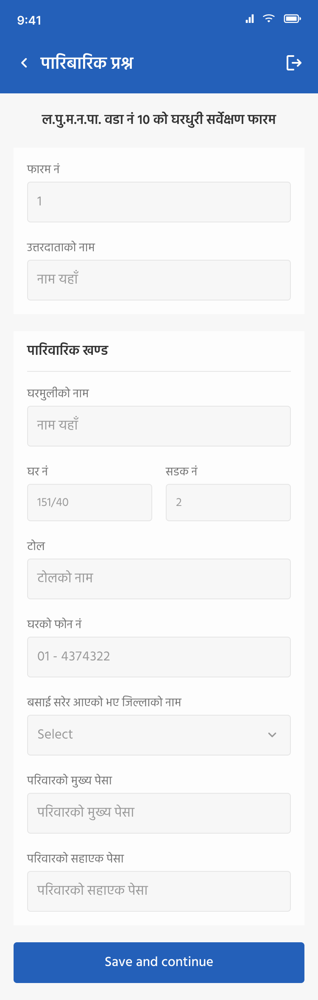
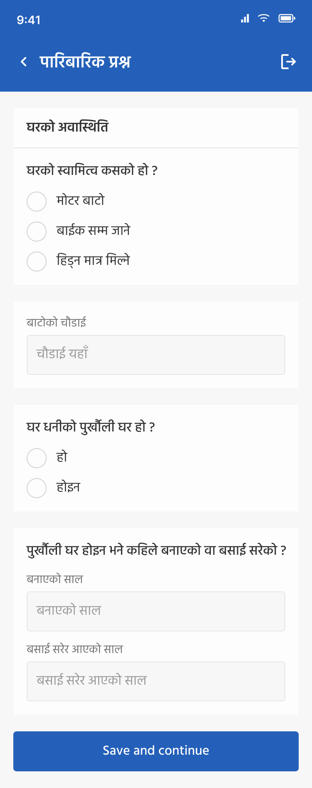
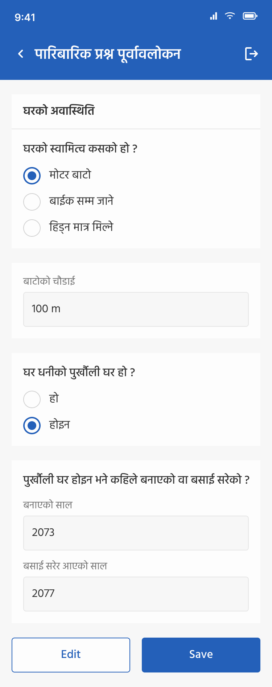
Individual form: per-member demographics
Each member of the household gets their own record. Name, relation to head of household, gender, parents' names, age, marital status, blood group, mobile, email. An Add new member action lets a worker capture an entire household in one sitting; the form preserves shared context (household name, head of family) across members so workers aren't re-typing the same fields five times.
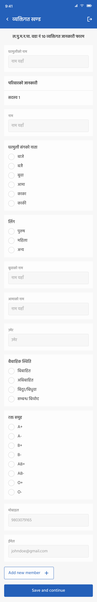
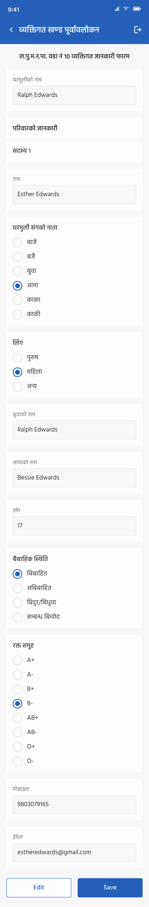
Routing, coverage, and proof-of-visit
Each worker is assigned a location for their day's route. The attendance screen pins it on a map (heritage landmarks like Patan Durbar Square and Manga Hiti show up, this is real Kathmandu Valley geography), captures whether the owner was available, and lets the worker upload a photo of the house. That photo plus the GPS pin is the audit trail: ward office knows the visit actually happened, where, and to which dwelling.
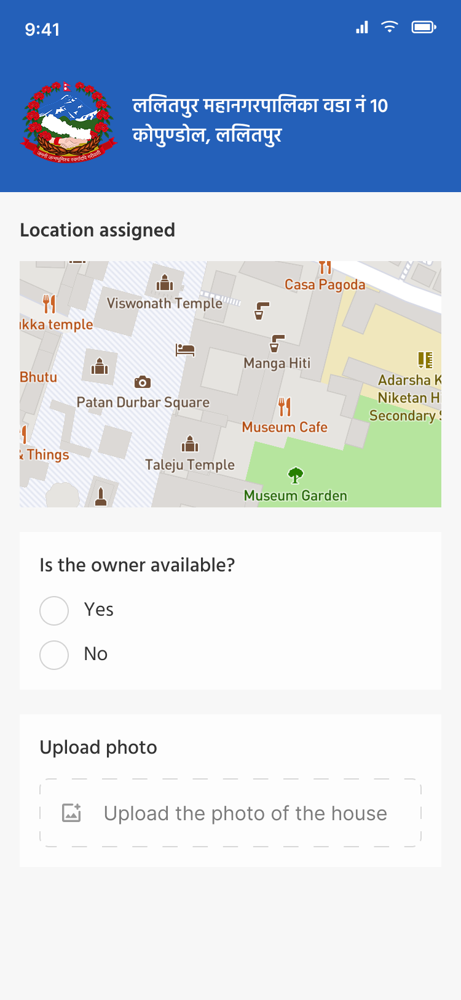
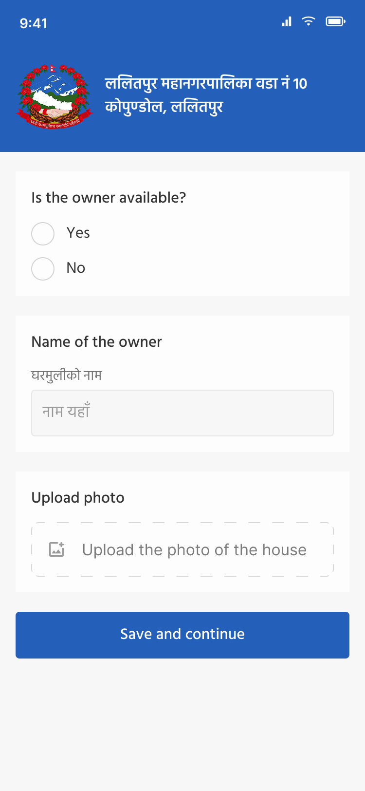
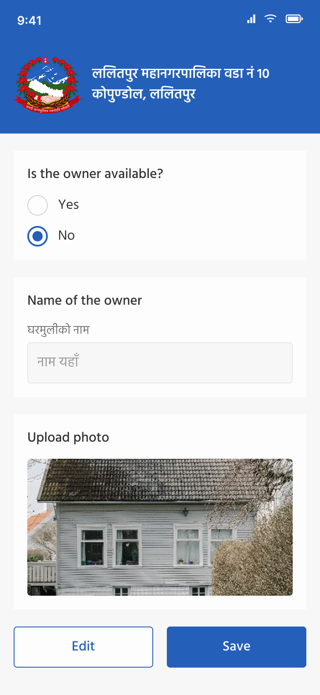
A small, opinionated design system
Because so many fields and screens share the same patterns, radio groups, checkboxes, inputs, status states, dropdowns, modals, I built a component library before drawing the screens. That kept the long forms feeling consistent and let the engineering team build them faster.
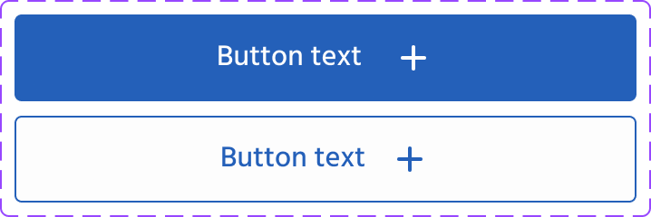
Buttons
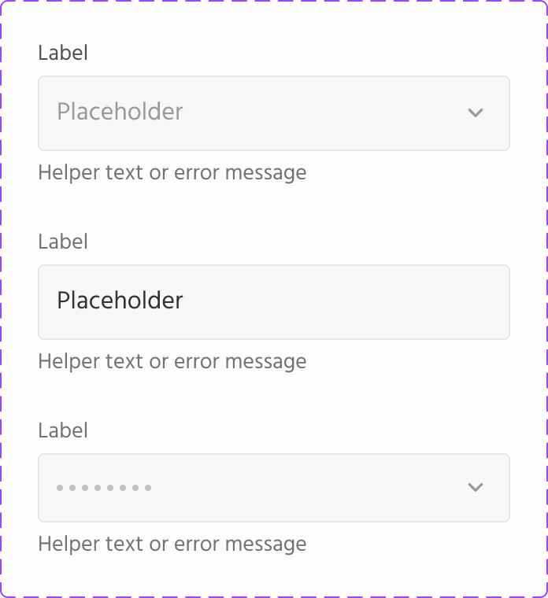
Inputs
Radio
Checkbox
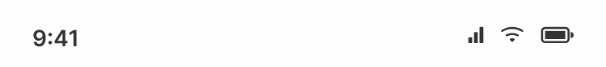
Status
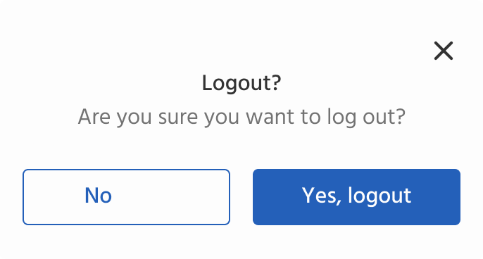
Modal
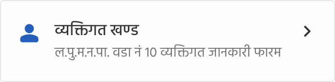
Form-type card
Icon set
Close the loop
Every form submission ends with the same calm success screen. Workers see a single clear confirmation, then a Continue action that takes them straight back into their route. No celebration, no extra clicks, this is government data work, and the fastest possible turnaround per household is the actual feature.
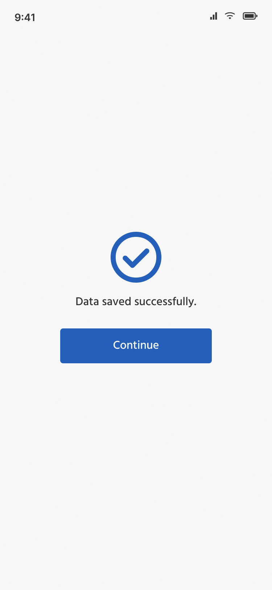
Outcome
The app shipped and was used by Ward 10 field workers to survey households in Jwagal and Kopundole, a ward of roughly 1,729 households and 6,554 residents. The design replaced the previous paper-and-spreadsheet pipeline with single-pass digital capture, GPS-tagged proof of visit, and central sync.
The ward's public web presence has since been rebuilt at ward10.lmc.gov.np, which now points residents at external government portals for forms and incident reporting. The app I designed sits behind that change, in the parts of the ward's operations that residents don't see.
What I'd take into the next project
- Sit next to the user before you draw. Designing for workers I could talk to in person changed which fields belonged on the same screen, where validation could relax, and how aggressive the bilingual labelling needed to be. None of that came out of a brief.
- Match existing mental models, then improve. The temptation in a digital-replaces-paper project is to redesign the whole form. Keeping the field order, labels, and Nepali wording was the unglamorous decision that made adoption real.
- Government work is design work. Civic and public-sector tools rarely show up in portfolios because they're bilingual, regulated, and built to a brief. They're also where design has the most direct effect on people's lives, I'd take more of this kind of work.